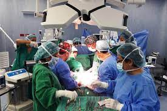

| Opinión acerca de la fabricación de órganos para trasplantes. | |
| Los beneficios que trae la fabricación de órganos para transplantes es muy buena. En este caso, solo se dona un órgano que no necesariamente es el 100% de este, para luego regenerarse. Esto ayuda de manera necesaria al paciente dandole mejor calidad de vida, pero claro no es tan fácil buscar a alguien que cumple con los requisitos y si esta dispuesto a hacerlo en caso de que este vivo y sano. |  |